In this second tutorial we will go through
using Illumina gene expression data.
We continue the analyses with the same data that was already analyzed in the Tutorial - part I.
Clustering is used for viewing the whole data set simultaneously. As we have a list of differentially expressed genes, clustering could also be used visualizing these differences. Select the statistical test result file (two-sample.tsv), and run the hierarchical clustering tool:
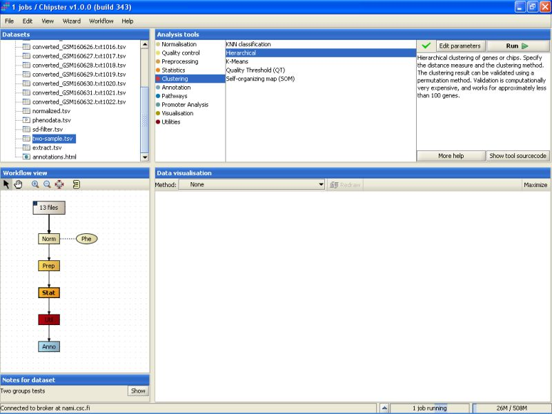Hierarchical clustering might take a few minutes to complete, but once it does, double-click on the clustering result (hc.txt) to visualize it:
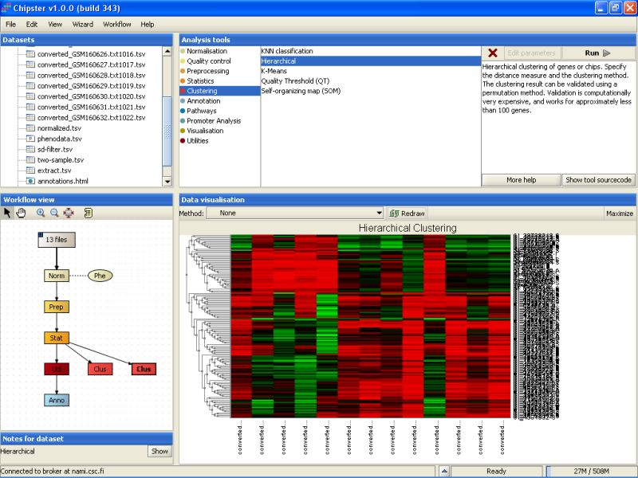Clustering actually produces two files, but the other file is just a dummy. It contains real information only if you choose to validate the clustering using bootstrapping. The dummy file (resample.png) looks like:
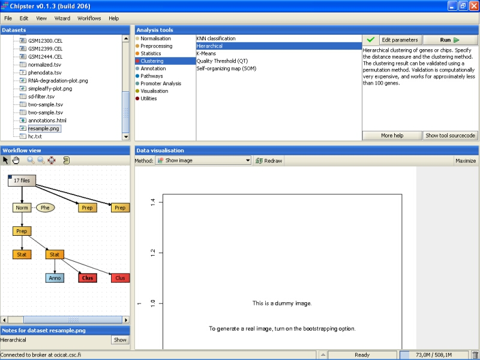Bootstrapping is a way to check to how well the data supports some clustering. To demonstrate this, and to check how the samples cluster, let's perform another hierarchical clustering, this time for samples. Use the same data set as above, but modify the settings: cluster genes, turn resampling on (bootstrapping), and change the number of replicates:
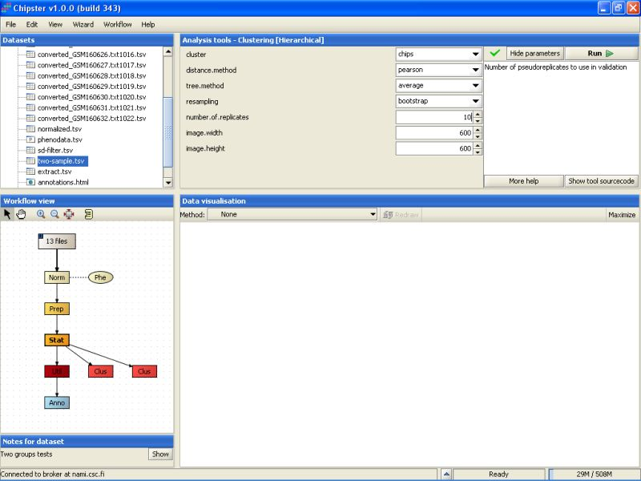Resampling is computer intensive, so the analysis might take a long time to run, if it is performed for a large number of objects, e.g., genes.
Once the analysis is ready, you can visualize the result as a normal heatmap:

The bootstrapping result is in the file resample.png, this time filled in with real data. The image is best viewed maximized:
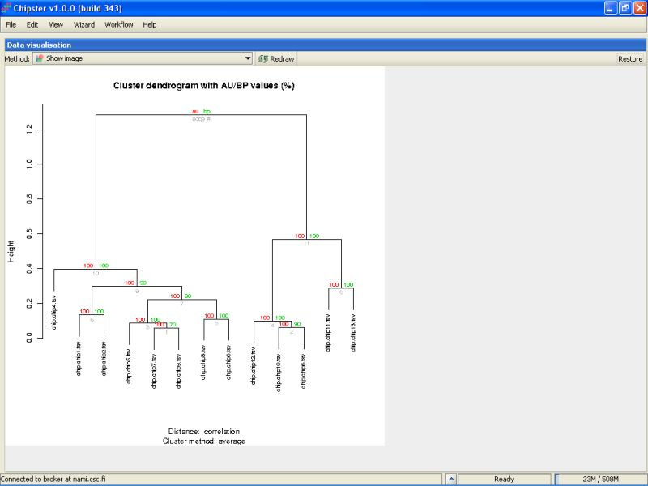The green numbers in the branches of the tree indicate the bootstrapping support as a percentage out of the number of replicates. If the number is large, e.g., over 90, it indicates that the current branch of tree is well supported by the data. For example, the right-most green number is 90. It means that in 9 out of ten replicates, the samples microarray13 and microarray3 clustered together. As the support is high, it means that these samples should probably be put together in the tree. Microarray12 and microarray4 were clustered together in 3 out of 10 replicates, and that clustering is dubious, since the support value is low.
The red numbers can be interpreted as 1-p values. In other words, if the red number is high, it means that the cluster is highly supported, and a hypothesis that the cluster does not exist can be rejected at 1-red number/100 level.
Gene enrichment to certain categories, typically to KEGG pathways or GO ontology, can be tested using a hypergeometric test. Gene enrichment test should be run using a pre-filtered data set, such as a one returned by statistical testing.
To run the test, select the data set that contains the statistically significantly differentially expressed genes, and select tool Hypergeometric test under the tool category Pathways:
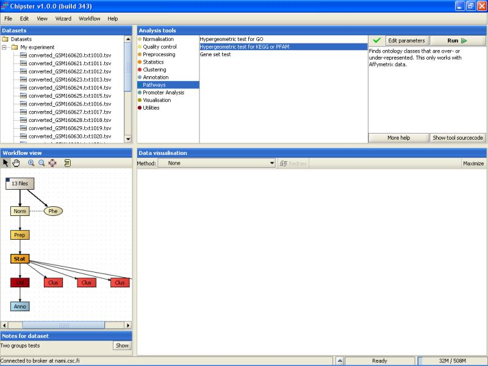The results are saved in an HTML-file (hypergeo.html). When the file is visualized, it becomes apparent that three KEGG pathways are statistically significant:
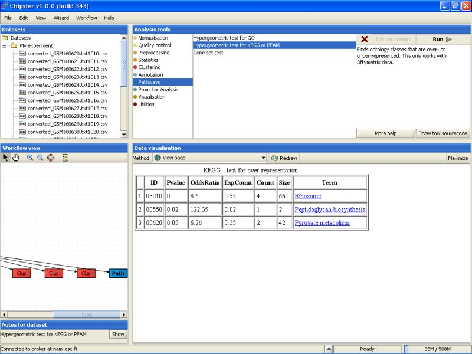It is a distinct possibility that the genes that are differentially expressed are under a similar transcriptional regulation. To look at this a bit closer, we can apply promoter analysis tools for the data set that contains the differentially expressed genes.
Let's first see, if the genes contain some clusters of known transcription factor binding sites. The tool for this analysis is located under the category Promoter analysis with name ClusterBuster:
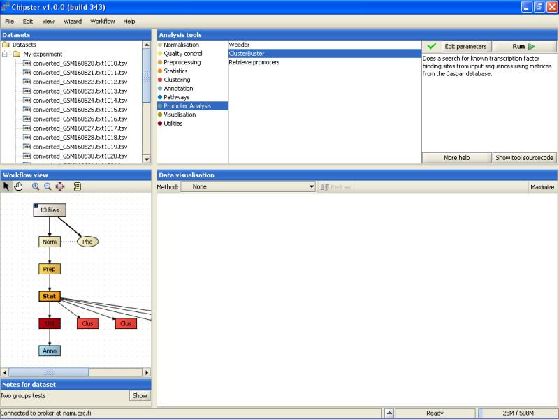By default, it is run for human promoters using short promoter sequences (1000 bps):

We will run the tool with the default options. The analysis might take a long time, since there were 142 genes to go through. Therefore, we will start another analysis at the same time. Select the Weeder tool under the category Promoter analysis:

By default it is run for human genes, and is thus directly suitable for the current dataset.
Once you've started the Weeder analyses, you'll see that the job status bar on the bottom of the screen will show a text "2 jobs running".
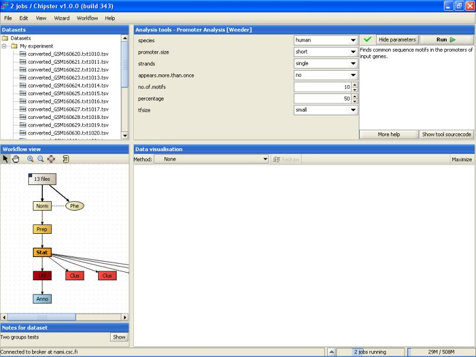You can get a list of running jobs by clicking the arrow up icon next to the job status bar:
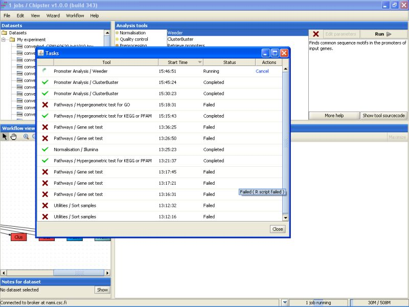A sometimes handy option is to cancel a certain job by clicking it in the job list. The cancelled job remaines on the list, but with the Cancelled status:
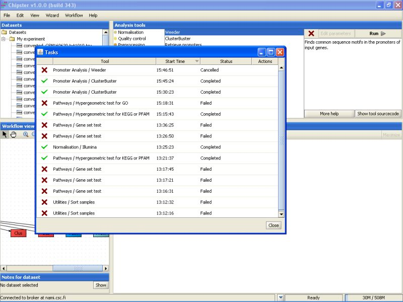Once the ClusterBuster job is ready, a new file will be generated (clusters.txt). The file lists the significant transcription factor binding sites for each of the promoter sequences submitted for the analysis. In addition, the location of the binding sites is marked on the sequence:
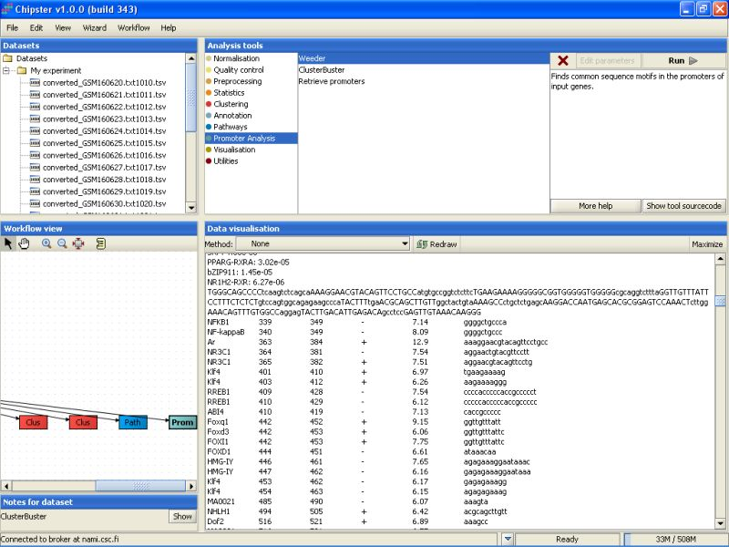The Weeder job will take much longer than the ClusterBuster job to finish, but once it does, a new file called seqs.html is generated. It contains the results for the search of common motifs from the promoter sequences. The part under header MY ADVICE will list the interesting findings for all promoter sequences:
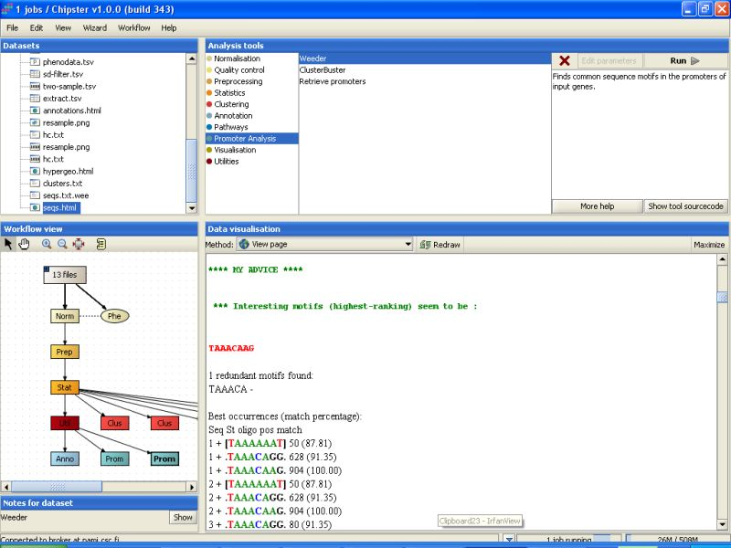This section can be skipped in this tutorial, since the data used here should not be resubmitted to the database as it already is there.
If you've ambitions of publishing your dataset in some good peer-reviewed journal, the data needs to be submitted to public databases. The principal ones are GEO at NCBI and ArrayExpress at EBI. Chipster contains two accessory functions to help you submit the data. The scripts Export GEO's SOFT format (for GEO database) and Export tab2mage format (for ArrayExpress database) are located under the tool category Utilities:
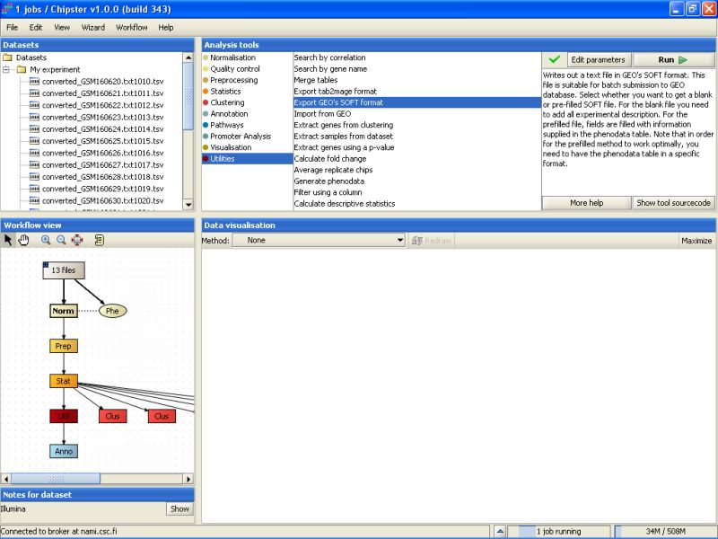The scripts should be run on the normalized data. Both tools write out a text file that you need to fill in yourself, but the format is correct for batch submission to the mentioned databases. For example, Export to GEO's SOFT format generates a files soft.txt that needs to be exported.
The exported file can then be opened and edited in some word processor.
There is short description for every file, and for the whole dataset in the end of the file, and all lines beginning with ! should be filled in by the user. This file can be used in a batch submission to GEO database through a www-interface.
It is very easy to become confused of how some analysis was carried out in the first place. To help you out figuring this even after a longer session, Chipster keeps track of the analysis you've done. Select the data set containing the differentially expressed genes, and right-click on it. From the opening menu, select View history as text:
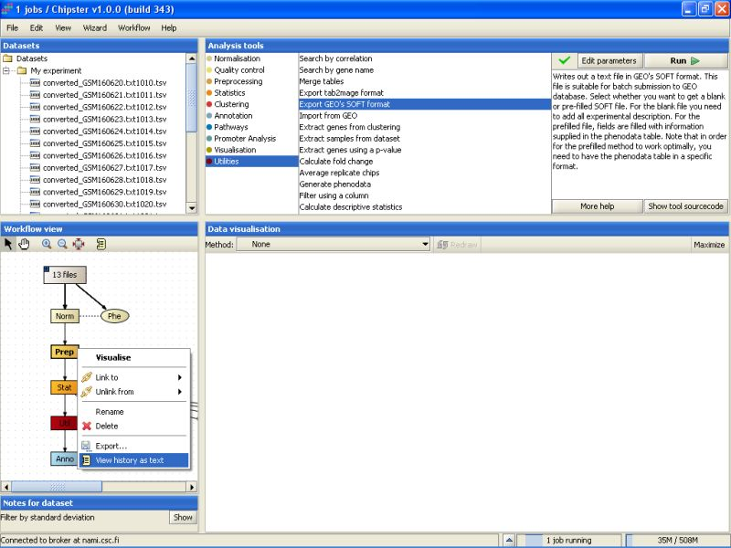The opening History displays some relevant information regarding how the result was reached:
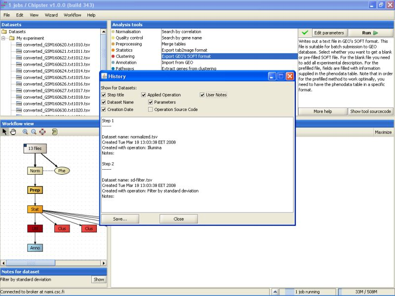The history lists all the analysis steps, the tools used for them, and what parameters the tools were run with. You select what is displayed in the history by ticking the boxes above the text field. For example, you can add the complete R source code to the history if you like. You can save the history to disk by clicking on the Save-button. It is probably a good idea to save the history with the exported data files, if you're later on going use them for further analyses.